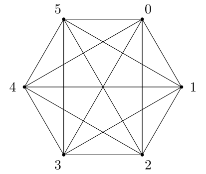
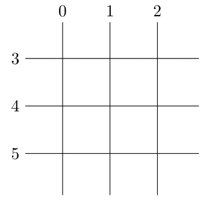

Visualization of simplicial intersections
Conor McCoid
Université Laval
Completed under the supervision of Martin J. Gander at the Université de Genève


Why intersect simplices?
Nonmatching grids

https://www.unige.ch/~gander/demo.php
Clipping
Multiphysics
Parameter estimation
Paulavičius, R., Žilinskas, J. Advantages of simplicial partitioning for Lipschitz optimization problems with linear constraints. Optim Lett 10, 237–246 (2016). https://doi.org/10.1007/s11590-014-0772-4
Sectioning
The intersection of two simplices can be found through successive intersections with hyperplanes
The intersection of two simplices can be found through successive intersections with hyperplanes
Throughout this presentation, we will focus on two examples: the simplex in 2D and the simplex in 5D
A hyperplane divides vertices into two groups, one on each side
We call the two groups fathers and mothers
Any vertices lying directly on the hyperplane are grouped with the fathers
A father and a mother with an edge between them create an intersection (child) with the hyperplane
Not all fathers have children with all mothers, they must neighbour each other
We need to be able to uniquely identify any intersection between simplex and hyperplane
Let each vertex of the simplex have an index from 0 to $n$
Then let the index of the child of any two parents be the union of their indices
1st order sections
sectioning a simplex with one hyperplane
Vertices of a section are the children of a father and a mother
This gives a set of vertices, but not a set of edges
Which children are neighbours in the section?
Two vertices are neighbours if their indices differ by exactly one element
Indices increase by one element after each sectioning
If two children share a parent then their indices share the parent's index and differ by one element
These children, called siblings, are therefore neighbours and have an edge between them
Cross-hatching
Diagram to help visualize sections
For each father, draw a vertical line
For each mother, draw a horizontal line
Every intersection is a child in the 1st order section
Any children connected along the same horizontal or vertical line of the cross-hatch are siblings
This means each line represents a simplex
This lets us draw the net of the section
1st order sections are all duoprisms, the Cartesian product of two simplices
2nd order sections
The vertices of the 1st order section are now parents for the 2nd order section
Colour each child in the cross-hatch based on whether it is a father or a mother
Since the section is convex, fathers and mothers are split into contiguous groups
In the cross-hatch diagram, if one can draw a right-angled triangle with vertices a father and two mothers, or a mother and two fathers, then the two children associated with these parents are siblings
Also, if three parents form a line, then their children are siblings
If two children have fathers who are neighbours and mothers who are neighbours, then these chilrden (cousins) are neighbours in sections of order 2 and higher
Only siblings and cousins are neighbours in 2nd order sections
If one can draw a rectangle with vertices two fathers and two mothers, then the associated children are cousins
We can draw the net, but it doesn't necessarily help us see the structure
Geometrically, this intersection cuts each cell (3D face) of the 1st order section with a plane
General sections
Vertices whose indices share all but $m$ elements all lie on the same $m$-face of the simplex

Vertices of $k$-th order sections have exactly $n-k$ neighbours
Conclusions
Cross-hatching provides strategies for visualizing the intersection between simplices and hyperplanes
This can help consider problems that might arise in algorithm design and geometric proofs